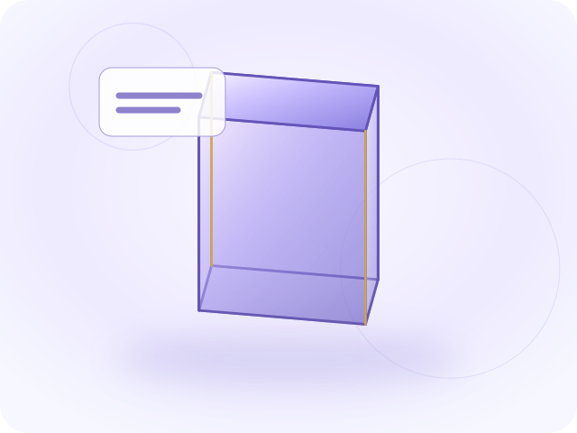
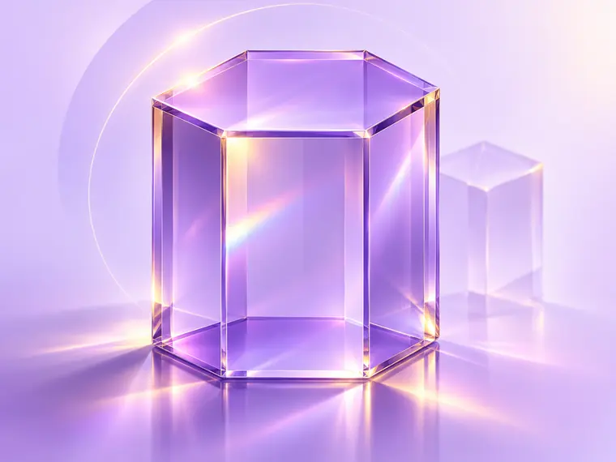
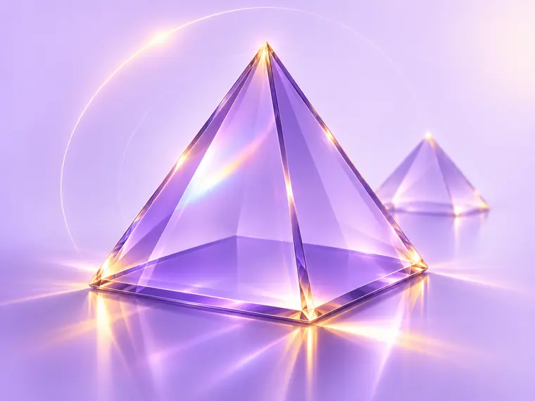
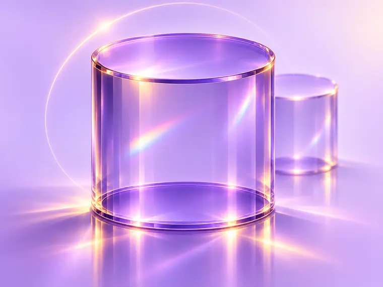
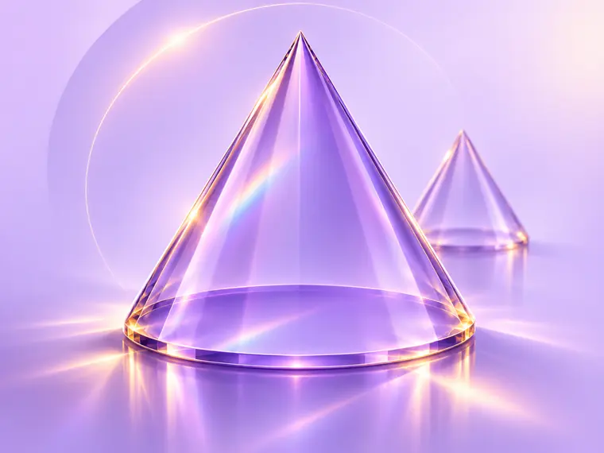
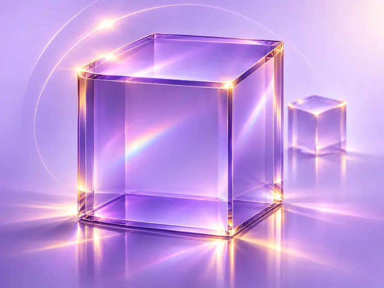
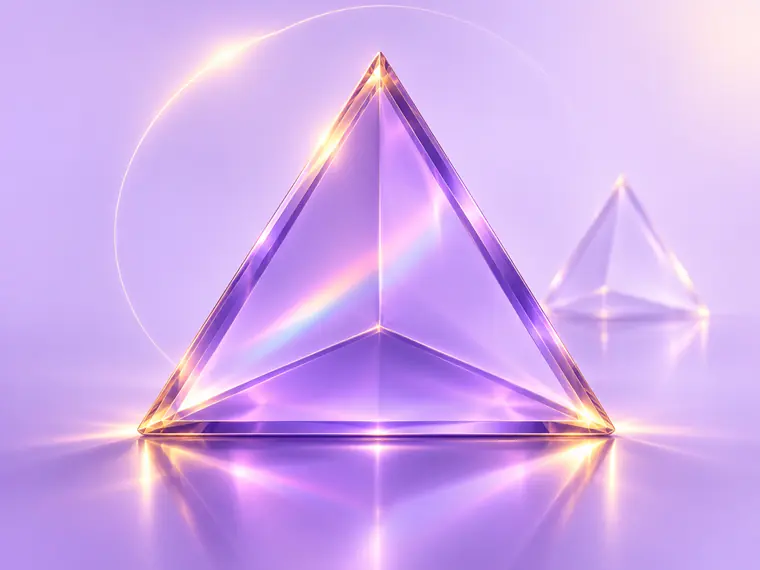
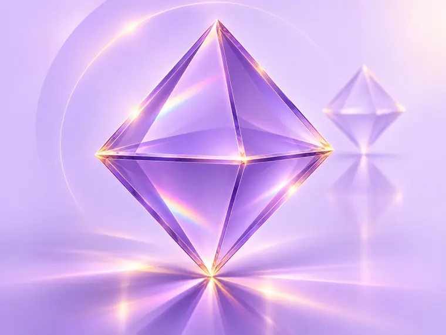
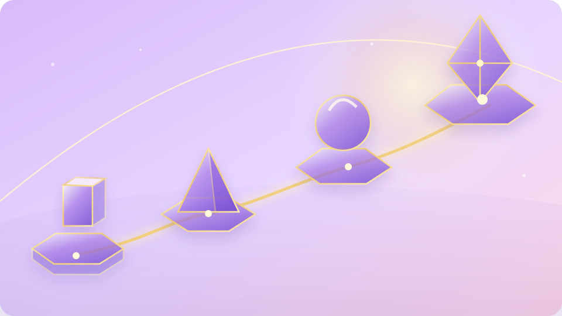
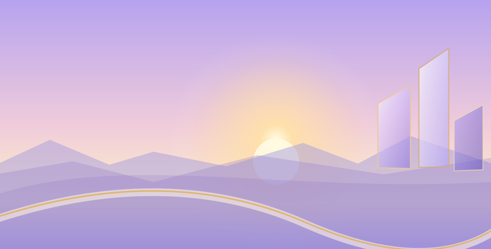

Aprender mirando
Reconoce caras, aristas y medidas antes de aplicar una fórmula. Cada explicación te ayuda a construir una imagen mental clara.
Una figura se entiende mejor cuando puedes observarla desde todos sus ángulos. Gira sólidos, cambia sus medidas y descubre de dónde salen las fórmulas, a tu ritmo y paso a paso.
No necesitas memorizarlo todo de golpe. Empieza por observar, prueba tus ideas y aplica lo que comprendes.
Reconoce caras, aristas y medidas antes de aplicar una fórmula. Cada explicación te ayuda a construir una imagen mental clara.

Gira la figura y modifica sus dimensiones. Descubre qué cambia, qué permanece y por qué importa.

Lleva lo observado a problemas de áreas y volúmenes. Usa cada fórmula sabiendo qué representa.
Empieza por el que más despierte tu curiosidad. Cada figura es una oportunidad para ver lo que antes parecía abstracto.







Una pregunta puede abrir todo un mundo. Prueba una figura, cambia sus medidas y descubre una relación nueva por ti mismo.
Comienza con puntos, rectas y planos: las ideas que te ayudarán a comprender todo lo demás.
Empieza por los fundamentos y avanza hasta los problemas de admisión. Cada paso que comprendes te prepara para el siguiente.

Cada paso cuentaSigue el orden sugerido o explora el módulo que más necesites: la ruta está abierta para ti.
Tu avance se guarda en este dispositivo, sin pedir una cuenta. Si borras los datos del navegador, también se borrará tu progreso; puedes exportar una copia.
Primero entiendes la idea, luego la pones a prueba y por último compruebas tu razonamiento. Así el aprendizaje tiene sentido.
Las figuras, los ejemplos y las demostraciones te ayudan a descubrir de dónde sale cada fórmula.
Compara procedimientos, reconoce confusiones habituales y ajusta tus ideas para comprender mejor.
Resuelve, verifica y explica tus resultados. Cada revisión te ayuda a afrontar retos más complejos.
Detrás de cada edificio, objeto o estructura hay ideas geométricas esperando a ser descubiertas. Elige una figura y comienza a ver el espacio de otra manera.
